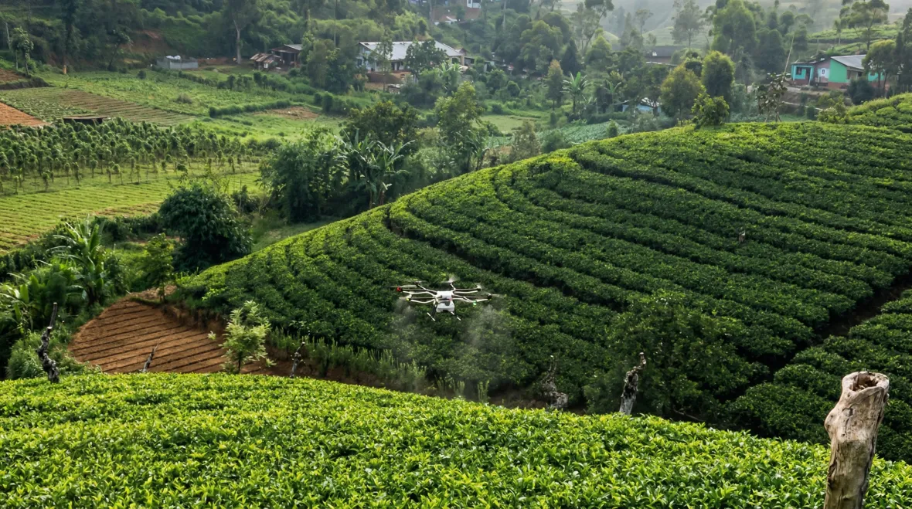

Platform Capabilities
End-to-end agricultural intelligence

Autonomous Crop Spraying
BRAIIN's autonomous drone systems enable precise crop spraying across large agricultural areas.
- Drones apply targeted treatments with high accuracy
- Reduces labour requirements and improves efficiency
- Automated aerial systems cover large areas quickly
Environmental Monitoring
Sensors and analytics systems monitor environmental conditions affecting crop performance.
- Monitor soil conditions, moisture levels, and environmental data
- Identify patterns that impact crop health
- Continuous operational visibility from field data

BRAIIN Agriculture Platform
A unified platform connects robotics, sensors, and analytics for intelligent agricultural insights.
- Collect and analyse data from multiple sources
- AI models identify patterns and risks
- Helps optimise management strategies